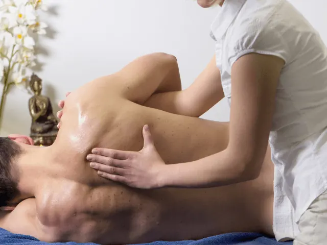
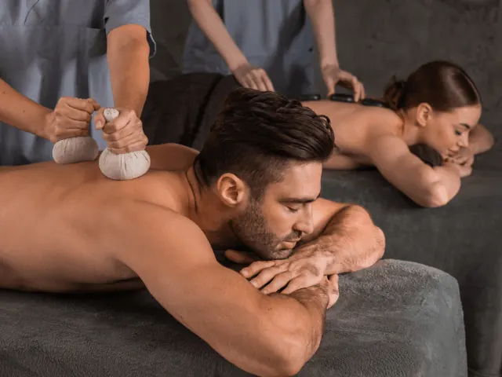
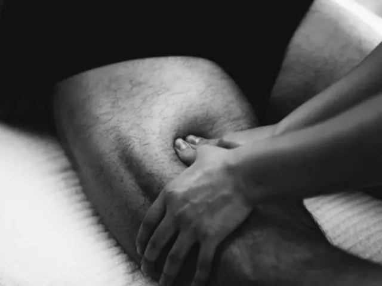

Massagesalon Nijmegen: Zelfzorg en pure ontspanning!
Gepubliceerd op 28 augustus 2023, bijgewerkt op 14 februari 2025
Onderdeel van de gids Massage in Nijmegen en Nijmeegse Vierdaagse

Welkom, in de wereld van zelfzorg en ontspanning! We weten allemaal dat het leven soms een gekke achtbaanrit kan zijn. Werk, verantwoordelijkheden, deadlines – het kan allemaal behoorlijk overweldigend worden. Maar maak je geen zorgen, we hebben een geheim wapen om je te helpen ontspannen en weer op te laden: bezoek gewoon een massagesalon in het prachtige Nijmegen. En leun achterover en ontspan.

Ontsnap aan de dagelijkse chaos met een hemelse massage
Voel je de spanning opbouwen in je nek, schouders en rug? Maak je geen zorgen, je bent niet de enige! Onze drukke levensstijl kan soms een tol eisen van ons lichaam. Gelukkig staan de masseurs uit Nijmegen klaar om je te verwennen met een hemelse massage-ervaring. Van zachte aanrakingen tot diepere knedingen, deze getalenteerde masseurs weten precies hoe ze die knopen kunnen ontwarren en je spieren kunnen kalmeren.
Een moment van verwennerij speciaal voor jou
Je verdient het allerbeste, en dat weten de massagesalons in Nijmegen maar al te goed! Met een scala aan behandelingen en technieken bieden ze een ervaring die op maat gemaakt is voor je behoeften. Van aromatherapie tot hot stone massages, ze hebben alles wat je nodig hebt om jezelf te verwennen en te herontdekken. Dus laat de verantwoordelijkheden even voor wat ze zijn en geef jezelf de toestemming om in de watten te worden gelegd.

Een oase van rust in het hart van Nijmegen
Midden in de bruisende stad Nijmegen bevinden zich kleine oases van rust en kalmte – de massagesalons die je welverdiende ontsnapping bieden. Stap binnen in een wereld van rustgevende muziek, aangename geuren en een warme ambiance. Laat de hectiek van het stadsleven even achter je terwijl je je overgeeft aan de zorgvuldige handen van ervaren masseurs. Hier, te midden van de drukte, kun je een moment van totale ontspanning vinden en jezelf helemaal opladen.
Investeer in jezelf en pluk de vruchten
Een bezoek aan een massagesalon in Nijmegen is meer dan alleen een verwennerij; het is een investering in jezelf. Door regelmatig tijd vrij te maken voor ontspanning en herstel, geef je jezelf de kracht en energie om de uitdagingen van het dagelijks leven aan te gaan. Je zult merken dat je productiviteit toeneemt, je humeur verbetert en je algehele welzijn wordt bevorderd. Dus waar wacht je nog op? Gun jezelf net dat beetje meer als je toch in Nijmegen bent.

Welke massagesalon uit Nijmegen past het best bij jou, kies er eentje uit onze favorieten
Nick’s Relaxmassages – Jouw persoonlijke ontspanning in Nijmegen
Bij Nick’s Relaxmassages draait alles om pure ontspanning en persoonlijke aandacht. Of je nu toe bent aan een ontspanningsmassage, een full body massage, of een diepere behandeling zoals een triggerpoint massage, Nick stemt elke massage af op jouw behoeften. Wil je de kalmerende warmte van een hotstone massage ervaren? Of liever een combinatie van een ontspanningsmassage met hotstones voor de ultieme rust? Alles is mogelijk.
In de sfeervolle omgeving van Nick’s Relaxmassages laat je de dagelijkse stress volledig los en geef je jezelf een moment van pure verwennerij. Boek jouw massage en ervaar hoe ontspanning voelt!
Mandarin Spa
Bij Mandarin Spa kunnen klanten genieten van een luxe en verwennerij. Met een breed scala aan massages en spabehandelingen, waaronder hot stone massages en aromatherapie, biedt deze salon een ontsnapping aan de drukte van het dagelijks leven. Klanten worden verwend met hoogwaardige producten en professionele technieken, waardoor ze zich verwend en vernieuwd voelen na elk bezoek.
Phum Jai Gezondheidsmassage
Bij Phum Jai Gezondheidsmassage kun je rekenen op een professionele en doeltreffende massagebehandeling. De ervaren masseurs nemen de tijd om naar je wensen en behoeften te luisteren, zodat ze de massage volledig kunnen afstemmen op je specifieke klachten of spanningen. De rustige en ontspannen sfeer in de salon zorgt ervoor dat je je meteen op je gemak voelt. Hier kom je voor een gerichte massage die zowel helend als ontspannend werkt.
BanThai Massage
Bij BanThai Massage word je ondergedompeld in een authentieke Thaise massagesfeer. De traditionele massagetechnieken worden hier met zorg en expertise toegepast. Je kunt een diepe, intensieve massage verwachten die je spieren losmaakt en eventuele blokkades aanpakt. De vriendelijke masseurs nemen de tijd voor je en zorgen ervoor dat je je na de behandeling verkwikt en hernieuwd voelt. Een bezoek aan BanThai Massage is een uitstapje naar Thailand zonder het vliegticket!
Ashton’s massage
Bij Ashton’s massage ben je in goede handen van een ervaren massagetherapeut. Deze salon staat bekend om de persoonlijke aandacht en zorg die ze aan elke klant besteden. Of je nu last hebt van stress, spanning of specifieke klachten, Ashton’s massage biedt een breed scala aan behandelingen die afgestemd worden op je individuele behoeften. Hier kun je een effectieve massage verwachten die zowel ontspannend als helend is, en waarbij jouw welzijn altijd centraal staat.
Conclusie
Laat jezelf verwennen, koester de momenten van ontspanning en geef jezelf de zorg en liefde die je verdient. Of het nu gaat om het verlichten van spierspanning, het verminderen van stress of gewoonweg genieten van een welverdiende pauze, deze massagesalons zijn er om je te helpen je optimale welzijn te bereiken. Dus zet die eerste stap naar ultieme ontspanning en maak vandaag nog een afspraak. Je verdient het!